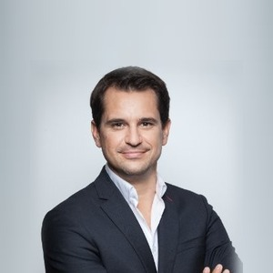

Emmanuel Laveran
Rédacteur hôtels et gastronomie chez Meilleurs. et associé de Triaina, la société qui édite le média. Cofondateur du magazine de voyage Yonder, où il a signé 226 articles : il arrive avec un carnet d'adresses que peu de rédactions françaises peuvent aligner.

Vingt ans de tables et de chambres
Emmanuel Laveran a passé l'essentiel de sa vie professionnelle à raconter des hôtels et des tables. Il est cofondateur de Yonder, le magazine de voyage qui couvre depuis dix ans les belles maisons, les chefs et les destinations, et où il a signé 226 articles au 31 juillet 2026. Il écrit aussi pour Les Hardis et pour 180°C, la revue culture food dont il est associé.
Il dirige par ailleurs W Garden, l'agence parisienne qu'il a fondée. Chez Meilleurs., il rejoint la rédaction en juillet 2026 sur le terrain qu'il connaît le mieux : ce qui se passe à table, et ce que vaut vraiment la chambre au-dessus.
Ce qu'il couvre
- Hôtels de luxe et palaces, avec l'œil de quelqu'un qui en a vu passer plusieurs centaines
- Gastronomie et tables d'hôtel, le critère le plus mal noté par la concurrence
- Spas et bien-être, en complément du travail de Swann Bertaud
- Destinations françaises et week-ends courts
- Ouvertures, où son réseau donne au média un temps d'avance
Ses parutions
- Croisières sur le Nil : les 5 plus belles, comparées, sa première signature, 31 juillet 2026
Cette liste s'allongera au fil de ses parutions. Pour le reste, ses 226 articles publiés sur Yonder disent mieux que nous ce qu'il sait faire.
Le contacter
Pour la rédaction, une adresse à proposer ou un signalement d'erreur : le formulaire de contact du média, réponse sous 48 h. Emmanuel Laveran est associé de Triaina, société éditrice du site, au même titre que Lucas Lecoq et Swann Bertaud : les fonctions de chacun figurent dans les mentions légales. Ce lien capitalistique ne change rien aux règles du Protocole LMHS, qui interdisent tout partenariat commercial avec un établissement noté.